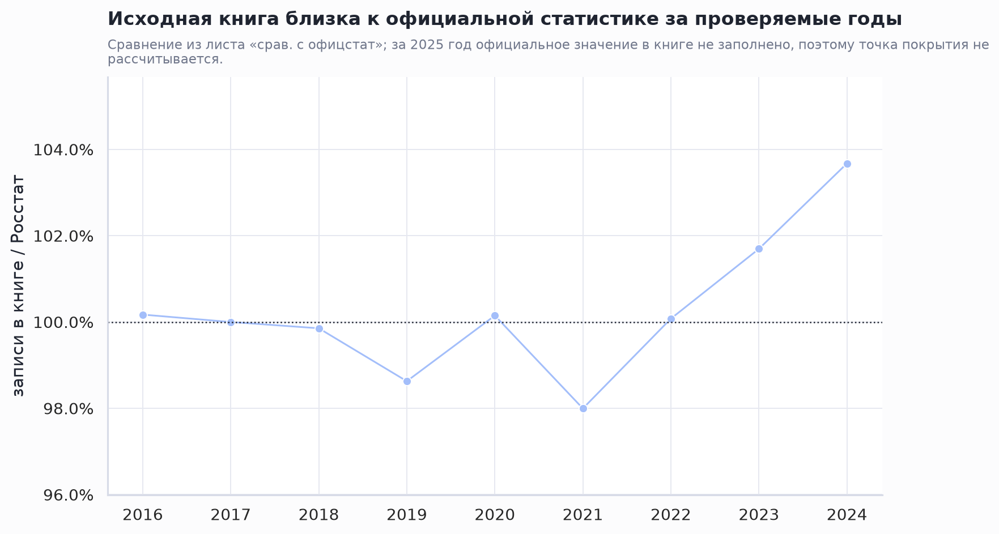
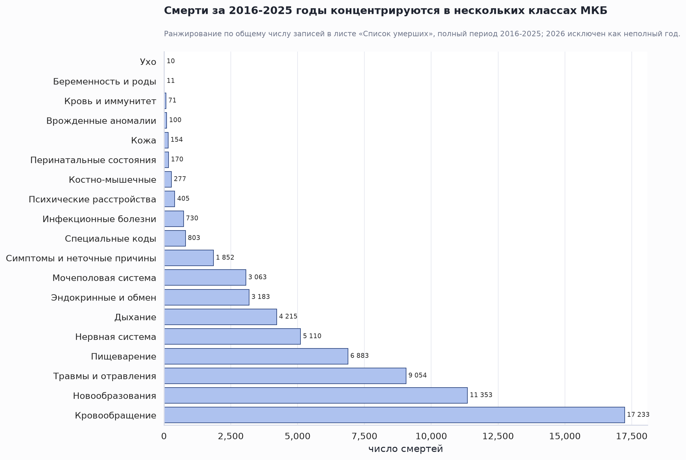
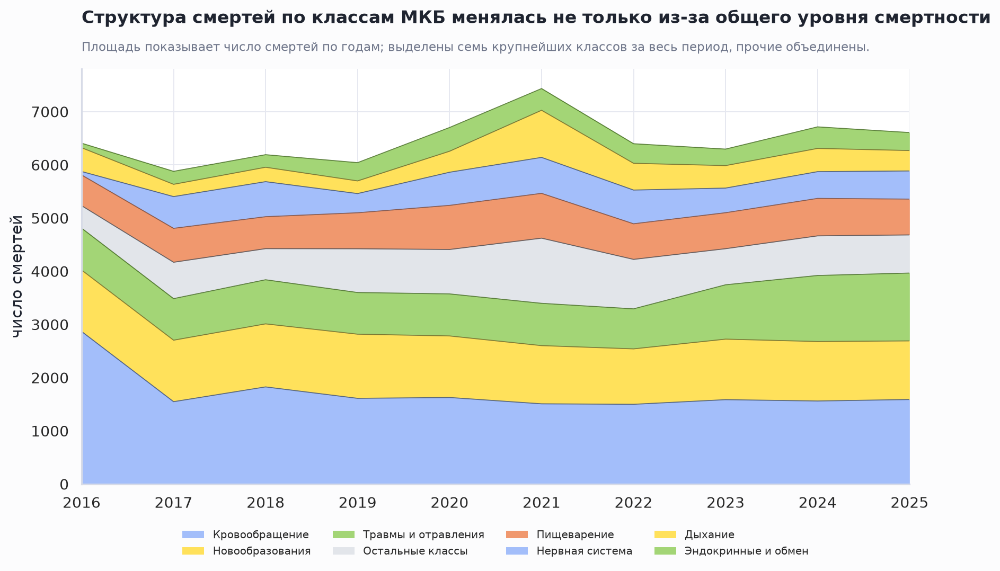
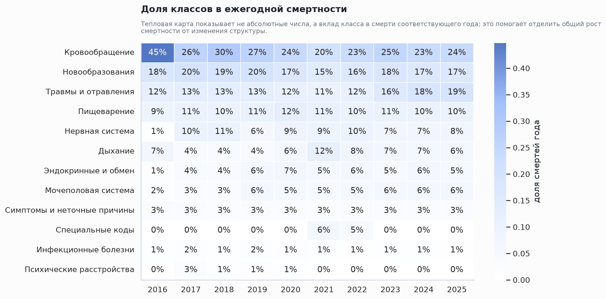
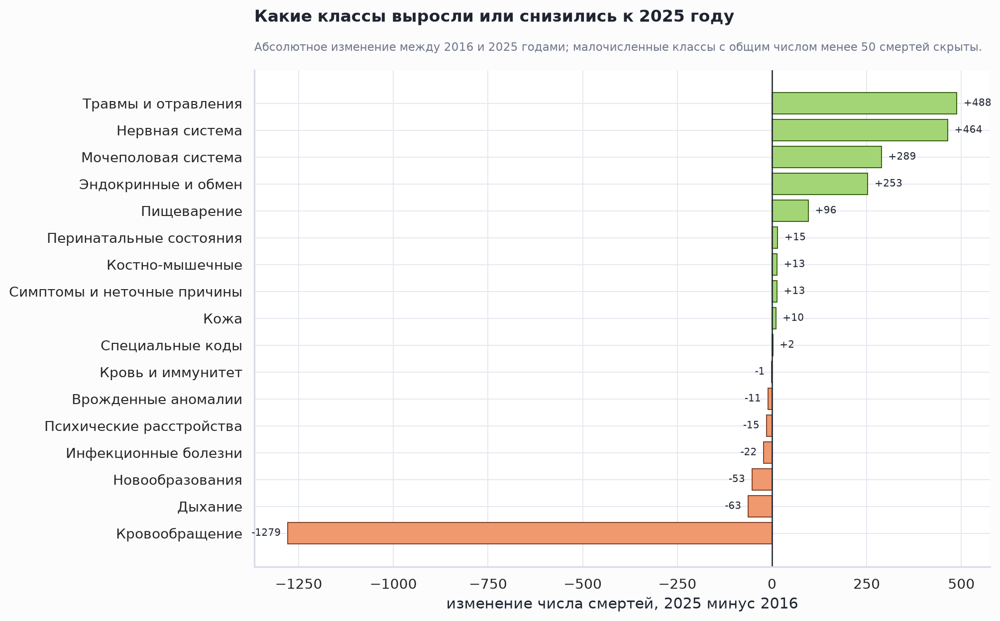
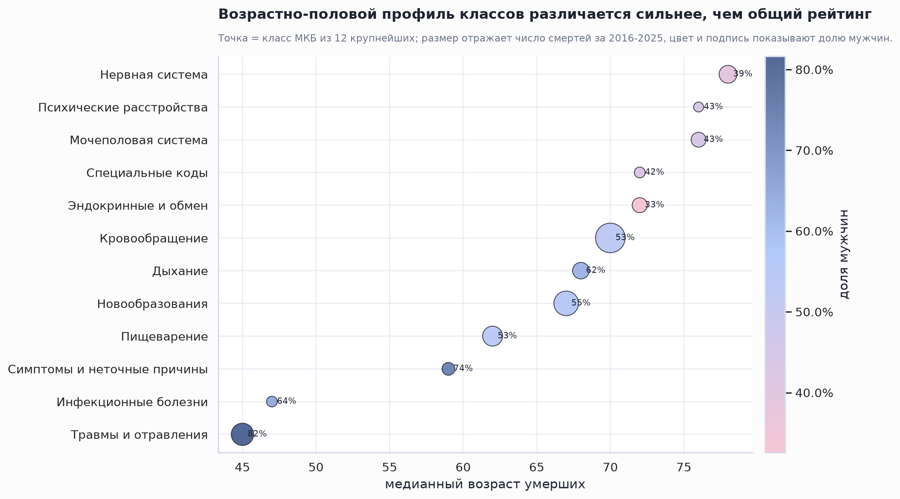
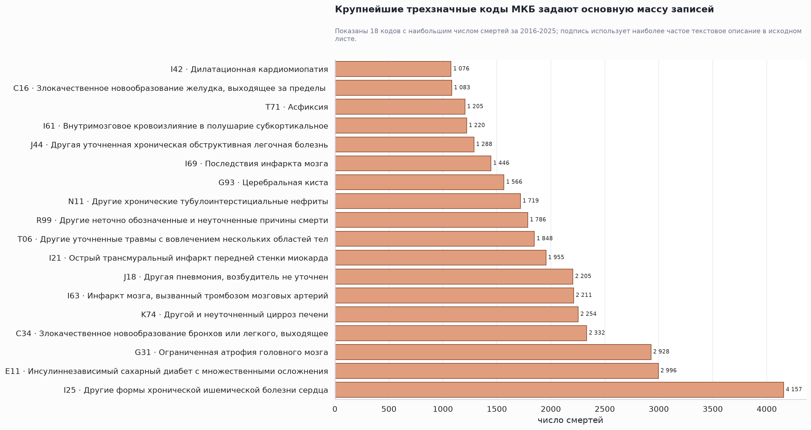
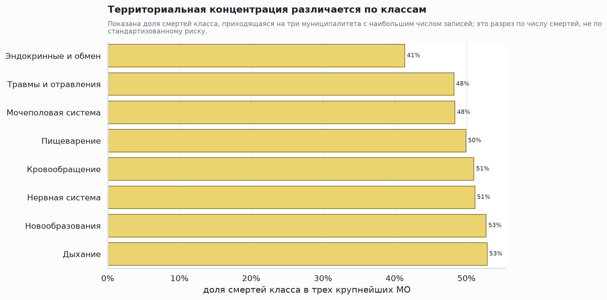

Смертность по классам МКБ-10, 2016-2025
Executive Summary
Основная масса смертей сосредоточена в нескольких классах. За 2016-2025 годы в рабочей книге учтено 64 677 смертей; крупнейший класс — «Кровообращение» (26,6%), а первые три класса вместе дают 58,2% всех записей.
Пик 2021 года меняет структуру, а не только уровень. В 2021 году в книге 7 435 записей против 6 408 в 2016 и 6 608 в 2025; отдельно заметны специальные коды МКБ и классы, чувствительные к инфекционным волнам и сопутствующей смертности.
Для содержательной интерпретации важны возраст и пол. Классы с высокой смертностью в старших возрастах нельзя напрямую сравнивать с травмами, перинатальными состояниями или внешними причинами без возрастной стандартизации.
Источник и качество данных
Анализ построен по индивидуальному листу «Список умерших» из общей книги смертности. В расчет включены полные годы 2016-2025; записи 2014, 2015 и неполный 2026 год исключены из трендов. Класс МКБ определен по полю «код МКБ» с нормализацией латинских и похожих кириллических букв.
Внутри периода не сопоставлено с классом МКБ 0 записей, возраст отсутствует у 10 записей, муниципалитет не указан у 991 записей. Это не ломает общую структуру классов, но влияет на возрастные и территориальные разрезы.

Классы МКБ: общий рейтинг
Рейтинг задается хроническими неинфекционными болезнями и травматическим блоком. Классы кровообращения, новообразований, травм/отравлений, эндокринных и респираторных болезней формируют основную массу смертей. Малочисленные классы важны для клинического контроля, но не определяют общую динамику области.

| Класс | 2016-2025 | Доля | 2016 | 2025 | Δ 2025-2016 | Медианный возраст | Мужчины | 65+ |
|---|---|---|---|---|---|---|---|---|
| Кровообращение | 17 233 | 26,6% | 2 869 | 1 590 | -1279 | 70,0 | 53% | 67% |
| Новообразования | 11 353 | 17,6% | 1 155 | 1 102 | -53 | 67,0 | 55% | 60% |
| Травмы и отравления | 9 054 | 14,0% | 787 | 1 275 | +488 | 45,0 | 82% | 15% |
| Пищеварение | 6 883 | 10,6% | 577 | 673 | +96 | 62,0 | 53% | 44% |
| Нервная система | 5 110 | 7,9% | 65 | 529 | +464 | 78,0 | 39% | 83% |
| Дыхание | 4 215 | 6,5% | 447 | 384 | -63 | 68,0 | 62% | 63% |
| Эндокринные и обмен | 3 183 | 4,9% | 85 | 338 | +253 | 72,0 | 33% | 79% |
| Мочеполовая система | 3 063 | 4,7% | 107 | 396 | +289 | 76,0 | 43% | 83% |
| Симптомы и неточные причины | 1 852 | 2,9% | 180 | 193 | +13 | 59,0 | 74% | 37% |
| Специальные коды | 803 | 1,2% | 0 | 2 | +2 | 72,0 | 42% | 76% |
| Инфекционные болезни | 730 | 1,1% | 71 | 49 | -22 | 47,0 | 64% | 16% |
| Психические расстройства | 405 | 0,6% | 15 | 0 | -15 | 76,0 | 43% | 74% |
| Костно-мышечные | 277 | 0,4% | 10 | 23 | +13 | 68,0 | 35% | 62% |
| Перинатальные состояния | 170 | 0,3% | 11 | 26 | +15 | 0,0 | 49% | 0% |
| Кожа | 154 | 0,2% | 7 | 17 | +10 | 67,0 | 38% | 56% |
| Врожденные аномалии | 100 | 0,2% | 18 | 7 | -11 | 24,0 | 55% | 17% |
| Кровь и иммунитет | 71 | 0,1% | 2 | 1 | -1 | 69,0 | 39% | 69% |
| Беременность и роды | 11 | 0,0% | 2 | 1 | -1 | 31,0 | 0% | 0% |
| Ухо | 10 | 0,0% | 0 | 2 | +2 | 57,5 | 60% | 40% |
Динамика 2016-2025: что выросло и что снизилось
Изменение по годам неодинаково по классам. Поэтому общий ряд смертности нельзя интерпретировать только как равномерный рост или снижение: часть классов меняет вклад в структуру года, а часть движется синхронно с общим числом записей.


Крупнейший рост к 2025 году
- Травмы и отравления: +488 смертей, 787 в 2016 и 1 275 в 2025.
- Нервная система: +464 смертей, 65 в 2016 и 529 в 2025.
- Мочеполовая система: +289 смертей, 107 в 2016 и 396 в 2025.
Крупнейшее снижение к 2025 году
- Кровообращение: -1279 смертей, 2 869 в 2016 и 1 590 в 2025.
- Дыхание: -63 смертей, 447 в 2016 и 384 в 2025.
- Новообразования: -53 смертей, 1 155 в 2016 и 1 102 в 2025.

Возраст и пол: классы нельзя сравнивать без профиля
Возрастно-половой состав объясняет часть различий между классами. Болезни кровообращения и новообразования имеют старший возрастной профиль, тогда как травмы и внешние причины обычно смещены к мужчинам и более молодым возрастам. Это критично для дальнейших моделей с алкоголем, табаком, аптечной и пищевой доступностью.

Трехзначные коды: что стоит за классами
Внутри классов есть выраженная концентрация на отдельных трехзначных кодах. Это полезнее для постановки медицинских гипотез, чем только уровень класса: один и тот же класс может объединять разные механизмы и профилактические маршруты.

| Класс | Код | Смертей | Доля внутри класса | Средний возраст | Наиболее частое описание |
|---|---|---|---|---|---|
| Кровообращение | I25 | 4 157 | 24,1% | 73,2 | Другие формы хронической ишемической болезни сердца |
| Эндокринные и обмен | E11 | 2 996 | 94,1% | 72,6 | Инсулиннезависимый сахарный диабет с множественными осложнениями |
| Нервная система | G31 | 2 928 | 57,3% | 79,0 | Ограниченная атрофия головного мозга |
| Новообразования | C34 | 2 332 | 20,5% | 66,5 | Злокачественное новообразование бронхов или легкого, выходящее за пределы одной и более вышеука |
| Пищеварение | K74 | 2 254 | 32,7% | 56,9 | Другой и неуточненный цирроз печени |
| Кровообращение | I63 | 2 211 | 12,8% | 72,2 | Инфаркт мозга, вызванный тромбозом мозговых артерий |
| Дыхание | J18 | 2 205 | 52,3% | 65,0 | Другая пневмония, возбудитель не уточнен |
| Кровообращение | I21 | 1 955 | 11,3% | 65,6 | Острый трансмуральный инфаркт передней стенки миокарда |
| Травмы и отравления | T06 | 1 848 | 20,4% | 39,7 | Другие уточненные травмы с вовлечением нескольких областей тела |
| Симптомы и неточные причины | R99 | 1 786 | 96,4% | 57,8 | Другие неточно обозначенные и неуточненные причины смерти |
| Мочеполовая система | N11 | 1 719 | 56,1% | 75,5 | Другие хронические тубулоинтерстициальные нефриты |
| Нервная система | G93 | 1 566 | 30,6% | 73,9 | Церебральная киста |
| Кровообращение | I69 | 1 446 | 8,4% | 73,4 | Последствия инфаркта мозга |
| Дыхание | J44 | 1 288 | 30,6% | 70,9 | Другая уточненная хроническая обструктивная легочная болезнь |
| Кровообращение | I61 | 1 220 | 7,1% | 61,8 | Внутримозговое кровоизлияние в полушарие субкортикальное |
| Травмы и отравления | T71 | 1 205 | 13,3% | 43,7 | Асфиксия |
| Новообразования | C16 | 1 083 | 9,5% | 67,6 | Злокачественное новообразование желудка, выходящее за пределы одной и более вышеуказанных локал |
| Кровообращение | I42 | 1 076 | 6,2% | 60,1 | Дилатационная кардиомиопатия |
| Пищеварение | K85 | 983 | 14,3% | 58,8 | Другой острый панкреатит |
| Кровообращение | I80 | 975 | 5,7% | 70,2 | Флебит и тромбофлебит других глубоких сосудов нижних конечностей |
Муниципальный разрез: концентрация по числу записей
Территориальные различия по классам пока показаны как концентрация записей, а не как риск. Для риска нужны стабильные знаменатели по годам и возрастная стандартизация. Тем не менее таблица помогает увидеть, где сосредоточены абсолютные объемы по крупнейшим классам.

| Класс | Муниципалитет | Смертей | Доля класса |
|---|---|---|---|
| Кровообращение | Южно-Сахалинск г | 5 924 | 34,4% |
| Кровообращение | Холмский р-н | 1 473 | 8,5% |
| Кровообращение | Корсаковский р-н | 1 399 | 8,1% |
| Кровообращение | Долинский р-н | 1 103 | 6,4% |
| Кровообращение | Углегорский р-н | 982 | 5,7% |
| Новообразования | Южно-Сахалинск г | 3 774 | 33,2% |
| Новообразования | Холмский р-н | 1 232 | 10,9% |
| Новообразования | Корсаковский р-н | 982 | 8,6% |
| Новообразования | Углегорский р-н | 676 | 6,0% |
| Новообразования | Поронайский р-н | 620 | 5,5% |
| Травмы и отравления | Южно-Сахалинск г | 2 933 | 32,4% |
| Травмы и отравления | Холмский р-н | 781 | 8,6% |
| Травмы и отравления | Корсаковский р-н | 655 | 7,2% |
| Травмы и отравления | Долинский р-н | 518 | 5,7% |
| Травмы и отравления | Поронайский р-н | 481 | 5,3% |
| Пищеварение | Южно-Сахалинск г | 1 930 | 28,0% |
| Пищеварение | Холмский р-н | 757 | 11,0% |
| Пищеварение | Корсаковский р-н | 749 | 10,9% |
| Пищеварение | Углегорский р-н | 477 | 6,9% |
| Пищеварение | Долинский р-н | 389 | 5,7% |
| Нервная система | Южно-Сахалинск г | 1 556 | 30,5% |
| Нервная система | Холмский р-н | 577 | 11,3% |
| Нервная система | Углегорский р-н | 482 | 9,4% |
| Нервная система | Поронайский р-н | 317 | 6,2% |
| Нервная система | Долинский р-н | 297 | 5,8% |
| Дыхание | Южно-Сахалинск г | 1 427 | 33,9% |
| Дыхание | Холмский р-н | 455 | 10,8% |
| Дыхание | Корсаковский р-н | 347 | 8,2% |
| Дыхание | Углегорский р-н | 289 | 6,9% |
| Дыхание | Долинский р-н | 241 | 5,7% |
| Эндокринные и обмен | Южно-Сахалинск г | 699 | 22,0% |
| Эндокринные и обмен | Холмский р-н | 318 | 10,0% |
| Эндокринные и обмен | Охинский р-н | 301 | 9,5% |
| Эндокринные и обмен | Корсаковский р-н | 290 | 9,1% |
| Эндокринные и обмен | Поронайский р-н | 231 | 7,3% |
| Мочеполовая система | Южно-Сахалинск г | 952 | 31,1% |
| Мочеполовая система | Корсаковский р-н | 293 | 9,6% |
| Мочеполовая система | Холмский р-н | 237 | 7,7% |
| Мочеполовая система | Александровск-Сахалинский р-н | 223 | 7,3% |
| Мочеполовая система | Поронайский р-н | 202 | 6,6% |
Рекомендованные следующие шаги
- Сделать возрастную стандартизацию по классам. Это нужно до любых выводов о районных различиях риска.
- Разобрать крупнейшие трехзначные коды внутри классов IX, II, XIX, IV, X и XI. Именно они определяют большую часть нагрузки и должны стать уровнем клинических гипотез.
- Сопоставить классы с экологическими факторами после исправления алкогольного слоя. Для алкоголя отдельно смотреть травмы/отравления, пищеварение, кровообращение и трудоспособный возраст.
- Проверить строки без муниципалитета и НП. Их немного относительно всей базы, но они могут влиять на территориальные карты и топы.
Ограничения
- Класс МКБ определен по первичному полю «код МКБ». Если в части травм внешняя причина закодирована только в дополнительных полях причин, класс XX может быть недооценен, а класс XIX — переоценен.
- 2026 год не включен, потому что на дату анализа это неполный год.
- Муниципальный разрез в этом отчете показывает абсолютные числа, а не стандартизованные коэффициенты.
- Возрастные группы в отчете аналитические: 0-17, 18-44, 45-64, 65-79, 80+. Это не официальная классификация трудоспособного возраста.
Поддерживающие CSV-таблицы и скрипт сборки сохранены рядом с отчетом.